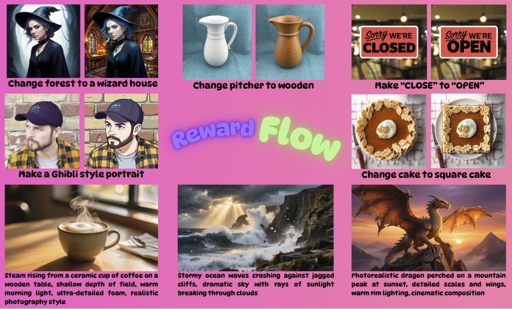
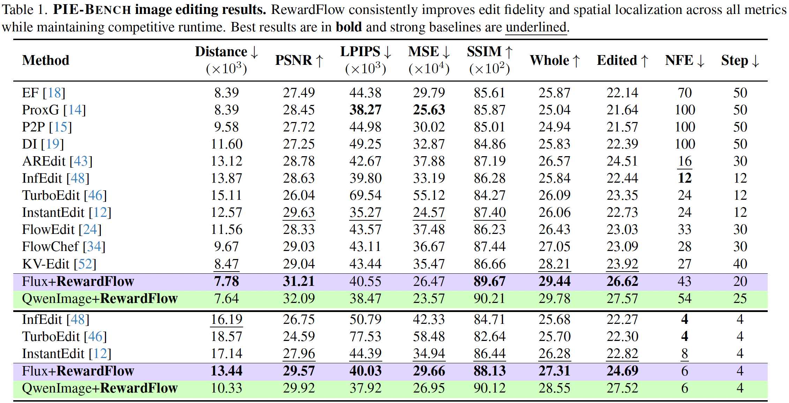
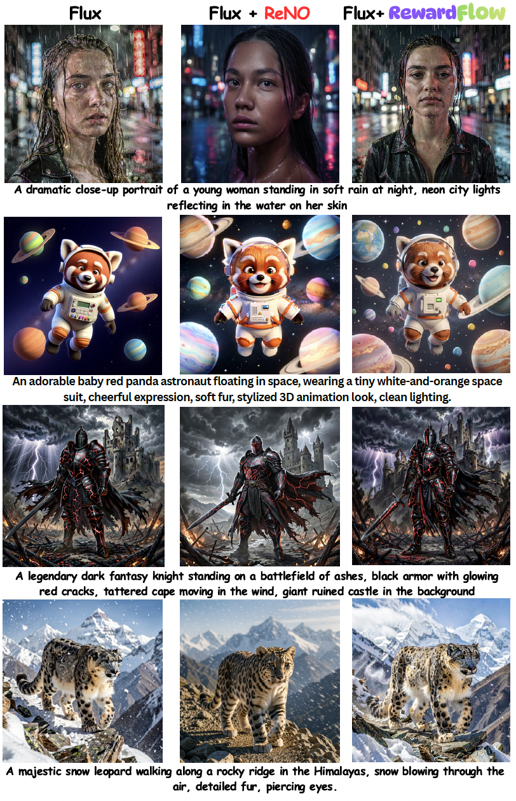

Abstract
We introduce RewardFlow, an inversion-free framework that steers pretrained diffusion and flow-matching models at inference time through multi-reward Langevin dynamics. RewardFlow fuses complementary differentiable rewards for semantic alignment, perceptual fidelity, localized grounding, object consistency, and human preference into a single guidance signal.
To provide fine-grained instruction-level supervision, RewardFlow adds a differentiable VQA-based reward and a SAM2 text-guided object reward, enabling localized edits and preventing semantic leakage outside the target mask. A prompt-aware adaptive policy extracts semantic primitives from the instruction, infers intent, and dynamically modulates reward weights and step sizes throughout sampling.
We further tether sampling to the originating latent via a clean-latent KL regularizer, which anchors the drift produced by the fused reward gradient. Across editing and compositional generation benchmarks, RewardFlow obtains state-of-the-art zero-shot fidelity and alignment without any fine-tuning.

✅ Contributions
- RewardFlow. We introduce a multi-reward-guided Langevin framework that combines semantic, perceptual, regional, object-level, and human-preference signals to enable controllable, inversion-free editing and generation.
- Prompt-aware adaptive policy. Our lightweight policy parses semantic primitives from the instruction, infers edit intent, and dynamically adjusts reward weights and step sizes to balance coarse-to-fine optimization.
- Fine-grained rewards. We design a differentiable VQA reward for attribute-level correctness and a SAM-guided localization reward that penalizes edits leaking outside the region of interest.
- Theoretical grounding. We prove the update corresponds to a valid discretization of a Langevin SDE targeting a prompt-tilted density, giving a sound foundation for stable convergence during reward-guided sampling.
Quantitative Results

RewardFlow achieves high edit fidelity and compositional alignment across editing benchmarks.
Qualitative Results

Generation samples guided by multi-reward Langevin dynamics.

Additional localized edits.

Compositional generation vs. baselines.

Comparison against prior reward-guided techniques highlights improved localization and reduced semantic drift.
BibTeX
@inproceedings{rewardflow2026,
title={RewardFlow: Generate Images by Optimizing What You Reward},
author={Susladkar, Onkar and Jang, Dong-Hwan and Prakash, Tushar and Juvekar, Adheesh and Shah, Vedant and Barik, Ayush and Bashir, Nabeel and Wahed, Muntasir and Shrirao, Ritish and Lourentzou, Ismini},
booktitle={Proceedings of the IEEE/CVF Conference on Computer Vision and Pattern Recognition (CVPR)},
year={2026}
}